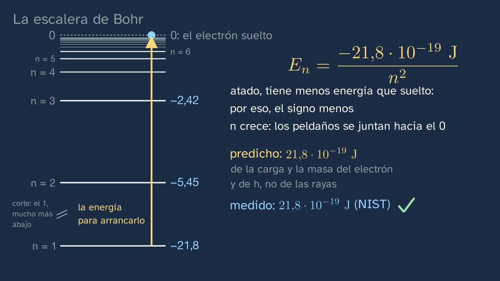
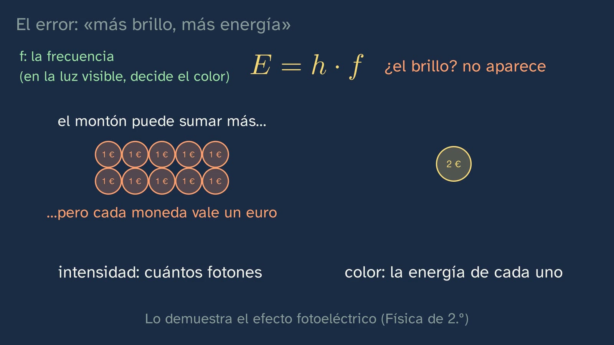
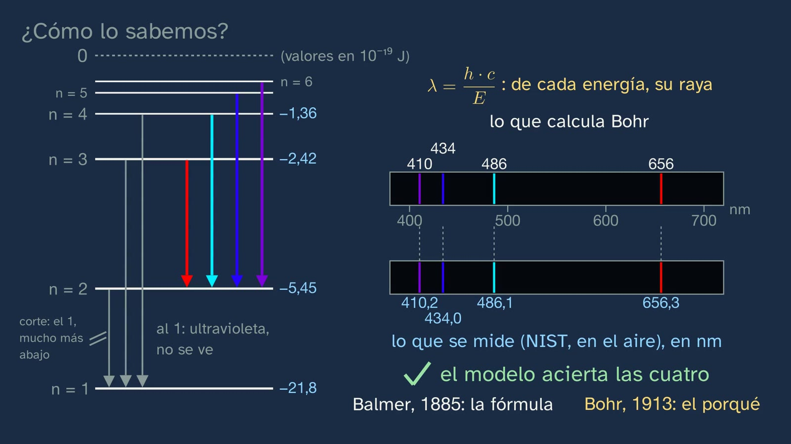
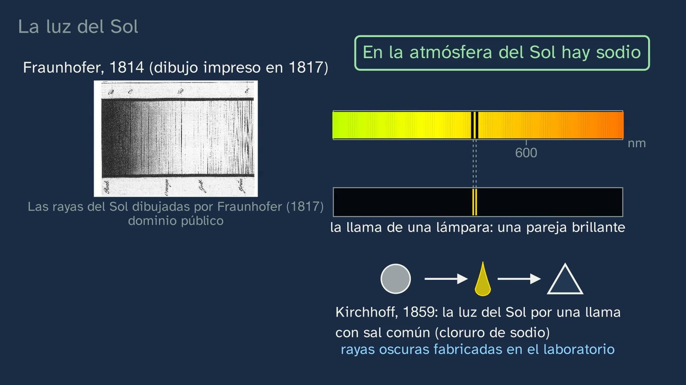
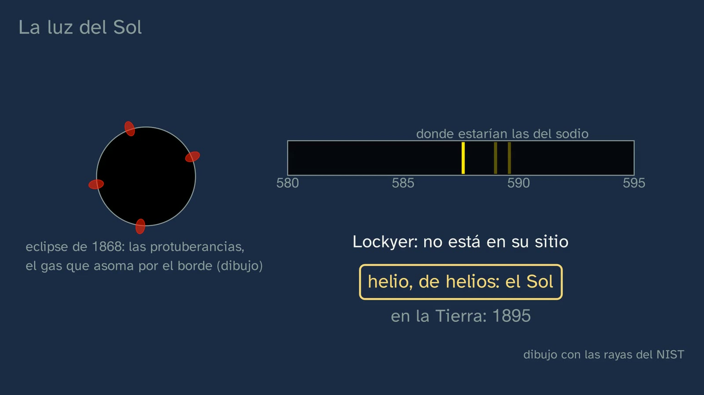

The light that gives each element away
In a nutshell
This is the theory class that explains what class 2 left in plain view in the lab: why each element gives only certain colours, and how that light tells us what things we will never be able to touch, like the Sun, are made of. It begins by recalling the colours of class 2 and their puzzle (lithium, sodium and potassium belong to the same family, and each gives the flame its own colour) and by correcting the three exercises. The hook is a sentence by Auguste Comte, from 1835: of the stars we could know their shape, distance, size and motion, but "never" their chemical composition. To prove him wrong we need to know what light is, and the class teaches it from scratch, because the common core of ESO does not guarantee it: a wave, its wavelength and its frequency, c = λ·f read aloud, and the electromagnetic spectrum, with the visible window from about 400 to 700 nm. Then comes the phenomenon, with a prediction: a very hot solid gives a continuous rainbow, and the hydrogen in a tube, only a few lines, its emission spectrum. In 1859 Bunsen and Kirchhoff build a spectroscope, and with it caesium, rubidium and the gallium of class 1 are discovered. Next, the explanation in two steps: Planck and Einstein (light travels in packets, photons, with E = h·f = h·c/λ), with one example worked all the way through, powers of ten included, and another with gaps, and the typical mistake, "brighter means more energy", taken apart with the formula itself; and Bohr's atom, which arises from the problem with Rutherford's atom: the electron can only be on certain rungs, and each jump downwards gives off a photon with exactly the difference. Hydrogen's rungs are read, Eₙ = −21.8 × 10⁻¹⁹ J/n², and then comes the test, the class's "how do we know?": the four visible lines of hydrogen, 656, 486, 434 and 410 nm, come out of the ladder, and they are the ones that are measured. With its limit, helium. The puzzle is solved (each element, its own ladder) and the class explains why a line spectrum is a fingerprint and a continuous one is not. The last part is the reverse path, absorption: Fraunhofer's dark lines, Kirchhoff's experiment that finds sodium in the Sun, helium, seen in the Sun's prominences before it was found on Earth, and Cecilia Payne, who in 1925 calculated that stars are mostly hydrogen and helium and wrote that it was almost certainly not real. Abril signs off with the sentence to remember: each element has its own light, and that light gives it away.
Objective. By the end, students will be able to explain why each element emits and absorbs only certain colours, and to relate each line of its spectrum to an electron's jump between two energy levels in Bohr's model (E = h·f).
What this sheet adds. The class goes straight to the point, and whatever does not answer its question is here: what it simplifies, and why (the continuous spectrum of solids, the glow of the hydrogen tube, why absorption is drawn with sodium and not with hydrogen, ionised helium, potassium's lilac); why, with rounded constants, one line comes out at 411 nm and not 410; the solutions to all the questions and exercises; the mistakes to expect, one of them measured with more than a thousand students; an activity, "Redo Bohr's test and read the light of the Sun"; and open resources, several in Spanish, among them the home-made spectroscope workshop of the Instituto de Astrofísica de Canarias (IAC) that class 4 will use.
The words. The voice talks of "rungs" (in Spanish, peldaños) and at once ties them to their name, energy levels (11:22); a "jump" is a transition between two levels, and a "line" (raya), a spectral line. The energy "packets" are Planck's quanta, and those of light, Einstein's photons. The three spectra of the textbook are named: continuous (4:16), emission (4:56) and absorption (18:31). And helium appears in the prominences, "the gas that peeks out from the edge of the Sun" (19:59), not in "flares": in Spanish-language astronomy, a llamarada solar (solar flare) is a fulguración, a different phenomenon (Terminology Committee of the Spanish Astronomical Society, 2023).
For readers outside Spain: the Bachillerato is the last two years of secondary school (ages 16–18), and ESO is the compulsory stage before it (ages 12–16). The video is in Spanish, with English subtitles; the images on this sheet come from the video and keep their Spanish text. In Spain the decimal separator is a comma (6,63 means 6.63); this English sheet uses points, and writes powers of ten with × (6.63 × 10⁻³⁴, which the board writes as 6,63·10⁻³⁴).
Curriculum
Spain's Royal Decree 243/2022, Physics and Chemistry (consolidated text in the Official State Gazette, BOE, checked on 27/09/2026 for the topic sheet; its latest update, of 02/07/2026, does not affect the annex). Our translation of the official Spanish text. The minutes are those of the video.
| Element | What the decree says | Where the class works on it |
|---|---|---|
| Core knowledge (block A, "Chemical bonding and the structure of matter") | "Electronic structure of atoms following the analysis of their interaction with electromagnetic radiation: explanation of an element's position in the periodic table and of the similarity in the properties of the chemical elements in each group." | The first half is the heart of the class: the interaction of light with atoms, in emission (10:30 to 16:11) and in absorption (18:31). The second half is only pointed at, and it should be said: lithium, sodium and potassium are a family because of the electrons in their outermost shell, and that, together with the position in the table, comes in classes 5 and 6 (16:57) |
| Specific competence 1 | "To solve problems and situations related to physics and chemistry, applying the appropriate scientific laws and theories, in order to understand and explain natural phenomena and show the role of these sciences in improving the common good and in everyday life." | The flame colours of class 2, explained with E = h·f and with each element's ladder (16:17). Its description asks students "to understand the interactions that take place between bodies and systems in nature, analysing them in the light of the laws and theories of physics and chemistry": that is the light that is emitted and the light that is absorbed |
| Specific competence 2 | "To reason soundly, using scientific thinking and the skills related to the work of science, applying them to observing nature and the environment, asking questions and forming hypotheses, and validating them through experimentation, inquiry and the search for evidence." | Two predictions before seeing (4:39 and 14:23); Bohr's postulate, "a rule that is accepted if its predictions are right" (12:01), put to the test with the measured lines (14:36 to 15:50). Its description: hypotheses "reveal the relationships between the variables they study in mathematical terms" |
| Specific competence 3 | "To handle the flow of information properly and confidently in the different registers of scientific communication, such as the nomenclature of chemical compounds, the use of mathematical language, the correct use of units of measurement and safety in experimental work, in order to produce and interpret information in different formats and from diverse sources." | Nanometres and metres, joules and J·s, in scientific notation (6:48 to 9:36); the ladder in 10⁻¹⁹ J, like the photons' energies (12:54); and three formats for a single idea: the formula, the ladder and the spectrum strip (14:36). And safety, when looking at the Sun (21:11) |
| Criterion 1.2 | "To solve physics and chemistry problems set in everyday situations, applying scientific laws and theories to find and argue the solutions, expressing the results appropriately." | The energy of a photon: the worked example (8:02), the one with gaps (9:00) and exercises 1 and 2 (21:56), the second argued without calculating |
| Criterion 2.3 | "To integrate known scientific laws and theories into the procedure for validating the hypotheses formulated, applying qualitative and quantitative relationships between the different variables, so that the process is more reliable and more consistent with the scientific knowledge acquired." | Bohr's model validated with hydrogen's lines (14:02 to 15:50): a quantitative relationship, the subtraction of two rungs, and a qualitative one, the biggest jump gives the shortest wave. And the limit: with helium it does not work (15:50). In this sheet's activity, students redo the test with their calculators |
| Criterion 3.1 | "To use and relate different systems of units rigorously, using their notation and equivalences correctly, making effective communication with the whole scientific community possible." | 656.3 nm = 6.563 × 10⁻⁷ m (8:02); the unit of h (joules multiplied by seconds), the hertz (one per second) and why the energy is left in joules (7:11); a watt is a joule every second (7:48); exercise 3 |
What this sheet's activity adds. Criterion 2.2, "To use different methods to find the answer to a single question or observation, comparing the results obtained and thereby making sure they are consistent and reliable": the same line, calculated with the model and measured in the laboratory. And 3.3, "To use different formats to interpret and express information about a specific physical or chemical process…": the ladder, the table and the strip of the Sun's spectrum.
What students bring. From ESO (Royal Decree 217/2022), years 1 to 3: "Atomic structure: historical development of atomic models, existence, formation and properties of isotopes, and the ordering of the elements in the periodic table" (Physics and Chemistry), which is where the Rutherford atom of 10:30 comes from; and "Large and small numbers: exponential and scientific notation and use of the calculator" (Mathematics), which the class uses constantly. Light as a wave, on the other hand, is only in year 4, which is optional ("Light and sound as waves that transfer energy"), and that is why the class teaches it from scratch (2:39). That same year 4 includes "the main classical and quantum atomic models": some students will already have heard of Bohr. From classes 1 and 2: the family of lithium, sodium and potassium, their colours and the puzzle; gallium, discovered by a violet line ("we'll talk about that light in the third class", class 1 promised, and this class keeps the promise at 5:40); and the Bunsen burner.
How the class is built
Video chapters
About twenty-two and a half minutes (23:15), in fourteen chapters, with one thread: recall and correct; Comte's question; the tool, light; the phenomenon, the lines; the explanation, in two steps, the photon and the ladder; the test; the puzzle solved; and the light of the Sun. It follows the channel's learning principles (in Spanish) and the department's model: predict, observe and explain, and models, with their limits. It has three stops to read an equation (c = λ·f, 3:35; E = h·f, 7:36; Eₙ, 13:15) and a fourth to think about what Payne's story teaches (21:06). Abril appears on camera four times, about twenty seconds in all: in the greeting (0:00), with the hook (2:00), halfway (16:11) and in the goodbye (23:09).
| Chapter | What happens | Why this way |
|---|---|---|
| What we'll see (0:00) | Abril says hello. The map of the topic's six classes, with the third highlighted: today, theory, the explanation of the colours from the lab. | Topic 1 keeps its numbered map. Saying that today we explain what was seen closes the cycle of the lab class. |
| What you already know (0:22) | What colour did each salt give? What puzzle did it leave us with? Pause (0:36). Deep red, orange-yellow and pale lilac: same family, different colours. | Retrieving exactly what is explained today. |
| Solutions to the previous class (0:58) | The four flames; the lithium experiment, changing one thing at a time; rubidium and caesium, with no rule visible by eye and discovered by their light. | Brief, and the third one opens today's story. |
| "Never" (2:00) | The hook, on camera: can we know what the Sun is made of without going there? Comte, 1835, with his sentence in French on screen, with work and page (2:04). Twenty-four years later, two German scientists begin to prove him wrong, with light alone (2:25). | A question students cannot answer, and a mistaken prediction by a serious thinker. |
| Light, a wave (2:39) | The rope: the wave travels and each point only moves up and down. Wavelength, frequency and v = λ·f, with a numerical example (2:59). Light, an electromagnetic wave, at 3.00 × 10⁸ m/s in a vacuum; stop: if λ gets shorter, f increases (3:35). The electromagnetic spectrum, with the visible window (3:43). | The tool, when it is needed and from scratch: the common core of ESO does not guarantee it. |
| A rainbow or a few lines (4:16) | The prism with the light of a filament: continuous spectrum. And with the hydrogen in a tube? Pause (4:51). The real photo: a few lines over a faint glow, the emission spectrum (4:56). Bunsen and Kirchhoff's spectroscope, 1859 (5:21). Caesium (1860), rubidium (1861) and gallium (1875), discovered by their lines (5:40). | Predict before seeing. What you see is real, and what is drawn is labelled as a drawing, with the NIST lines. |
| Packets of light (6:19) | Why only a few lines? Planck (1900): matter absorbs or gives off energy in packets, quanta; Einstein (1905): light itself, photons. E = h·f, each letter with its unit, and E = h·c/λ (6:48). Stop (7:36): double the frequency, double the energy; a watt of yellow light is about three quintillion (3 × 10¹⁸) photons per second. | The first step of the explanation. The formula is read before it is used. |
| A worked example (8:02) | Hydrogen's red line, 656.3 nm: into metres, with the decimal point that moves and the exponent that goes up; on top, 6.63 × 3.00 and the exponents that are added; at the bottom, the one that is subtracted: 3.03 × 10⁻¹⁹ J. The one with gaps, the blue-green line (9:00; pause 9:18): 4.09 × 10⁻¹⁹ J (9:23). | A complete example, with the powers of ten, which is what a sixteen-year-old cannot do alone, and another with gaps. |
| The mistake: "brighter means more energy" (9:36) | A very intense red light and a faint violet one: which carries photons with more energy? Pause (9:47). Brightness does not appear in h·f, only frequency, which in visible light decides the colour: intensity says how many photons arrive, and colour, how much energy each one carries; a pile of one-euro coins against a single two-euro coin; the photoelectric effect, in Physics in year 2. | The typical misconception, taken apart with the equation just learned. |
| Bohr's ladder (10:30) | Rutherford's atom and its problem: an orbiting charge gives off light, so the electron would spiral in until it crashed into the nucleus, the collapse of the atom, and give a continuous rainbow (10:30 to 11:22). Bohr, 1913: only certain energies, the levels; hydrogen has a single electron and many rungs, which are not electrons but the energies it can have (11:42); on a rung it gives off no light, so it does not fall into the nucleus: the atom does not collapse; a postulate (12:01). The jumps and their photons (12:09). Eₙ = −21.8 × 10⁻¹⁹ J/n², written with 10⁻¹⁹, like the photons' energies (in textbooks, −2.18 × 10⁻¹⁸ J/n²: it is the same number), with the first three rungs said aloud (12:39). Stop (13:15): where zero is, why the minus sign, why they crowd together; and the energy to pull the electron away, which Bohr got from the charge and mass of the electron and from h, not from the lines, and which matches the measurement. | The model arises from a problem, not out of nowhere. The formula is read, as the template asks for with any equation. |
| How do we know? (14:03) | The visible lines are the jumps that end on rung 2. What colour will the one from 6 to 2 be? Pause (14:31). Violet. The subtraction from 3 to 2 gives 3.03, the red photon of the example, and with λ = h·c/E, the 656 nm line; from 4 to 2, 4.09, the one with gaps (14:36); the four calculated lines fall where the measured ones are (15:28). Balmer (1885) had the formula; Bohr, the reason. The limit: with helium, no (15:50). | The test compares energies with calculations students have already done, without exposing it to rounding (see "Questions and solutions"). And every model, with its limit. |
| Each element's fingerprint (16:17) | Abril, halfway (16:11): each line is a jump between two levels. The puzzle: a different number of protons and electrons, and so its own ladder, with the jumps drawn to scale, and its NIST lines: lithium, 670.8 nm; sodium, two lines at 589; potassium, at both edges of the visible. What they share, the outermost shell: classes 5 and 6 (16:57). Stop and think: why is a line spectrum a fingerprint and a continuous one not? (17:12; pause 17:27). In a solid, the rungs split; in a low-density gas, they are those of each element (17:33). | Class 2's promise, kept, and the reason for the word "fingerprint". |
| The light of the Sun (18:31) | Absorption: a gas cooler than what lies behind it swallows the colours of its jumps; the drawing, with sodium. Fraunhofer (1814) and the dark pair in the yellow; Kirchhoff (1859), sunlight through a flame with common salt, sodium chloride, and the dark lines made in the laboratory: there is sodium in the Sun (19:03). Line by line, iron, calcium, magnesium and hydrogen (19:43). Helium, a bright line in the prominences at the edge of the Sun, in the 1868 eclipse (19:59). Payne, with Cannon's plates (20:32). "A well-measured result can be right against what everyone expects", and the warning: never look at the Sun without a certified filter; its light will be looked at in class 4 by pointing at the sky, never at the Sun (21:06). | The other half of the objective, "emits and absorbs", and the answer to Comte. A "how do we know?" with an experiment, Kirchhoff's. |
| Practice and keep thinking (21:28) | Recap; three exercises (21:51; pause 22:28); the open question (22:31); class 4, the spectroscope with a DVD (22:57); goodbye (23:09). | The solutions open class 4. The open question also goes in the comments. |
Links with other subjects. Mathematics I: scientific notation and the powers of ten in the example, and the rounding that turns 410 into 411, which is exactly the "How wrong are we?" of topic 2 in Mathematics. Philosophy in year 1: "Scientific knowledge: definition, demarcation and scientific methodologies. The philosophy of science: nature, problems and limits of scientific knowledge" (B.1), for Comte's sentence, the postulate that is accepted if it is right, and the open question. Physics in year 2: light as an electromagnetic wave and the photoelectric effect; Chemistry in year 2: spectra and "From Bohr's model to quantum-mechanical models" (see "What the class leaves out"). History of science: the Harvard observatory, where Annie Jump Cannon classified the stellar spectra that Cecilia Payne worked with.


A plan for a 50-minute lesson
Designed for watching the whole video in class, in parts, with the student worksheet, and starting the activity. The video lasts about twenty-two and a half minutes; with the stops, about thirty.
| Minutes | What to do |
|---|---|
| 0–4 | No video, with the worksheet: "Before watching". The colours of lithium, sodium and potassium; what will come out of a prism with the light of a gas; 656.3 nm in metres. |
| 4–9 | Video from 0:00 to 4:16 (from 0:58 to 2:00, the solutions, only if they have not already been corrected in class). Stop at 0:36 and answer aloud. |
| 9–12 | Video from 4:16 to 6:19. Stop at 4:50: each student looks at the drawing they made before starting, and changes it if they wish. |
| 12–18 | Video from 6:19 to 9:23. Stop at 9:18 and do the example with gaps on the worksheet (two minutes), with a calculator. |
| 18–20 | Video from 9:23 to 10:30. At the pause at 9:47, a show of hands. |
| 20–25 | Video from 10:30 to 14:36. At 14:31, each student writes down their prediction. |
| 25–29 | Video from 14:36 to 17:33. At the pause at 17:27, in pairs, the fingerprint. |
| 29–33 | Video from 17:33 to 21:28. |
| 33–35 | Video from 21:28 to the end (23:15). The exercises, for homework. |
| 35–48 | The activity, part A: "Redo Bohr's test", in groups (see below). |
| 48–50 | Discussion: why does one group get 411 nm and not 410? Part B, the light of the Sun, for another session or for homework. |
If time is short, the whole activity goes to another session, and in this one more time is given to the stops at 4:51, 14:31 and 17:27.
What the class simplifies, and why
The class says what its question needs, and says it precisely. But it deliberately simplifies several things that a Physics and Chemistry teacher knows and that some student will ask about.
- The continuous spectrum of a solid (17:33). The voice says that in a solid the atoms are packed so tightly that their rungs "split into a huge number of levels, almost touching", and that the rainbow "depends mainly on its temperature". It is a valid picture for year 1, resting on two ideas that OpenStax gives separately: in a solid, the levels form almost continuous bands (University Physics 3, 9.5), and the light of a hot body follows, only approximately, the blackbody curve, which is set by the temperature (University Physics 3, 6.1). No source we have read joins the two in those words: it is a simplification. And not everything dense is solid: a very dense gas, or a gas of molecules, gives bands, not lines, like the strontium and copper of class 2 (see the honest note on its sheet). That is why the class says "a low-density gas" (4:56 and 17:33), which is Kirchhoff's condition.
- The glow in the hydrogen photo (4:56). A hydrogen discharge tube does not contain only atoms: it contains mostly molecules, H₂, which give a spectrum of a great many lines close together and a faint background. That is the glow in the background of the photo, and the reddish bands between the blue-green line and the red one; the caption on the board says so. That is why the comparison of Bohr with what is measured (15:28) is made with the NIST lines drawn, not with the photo, whose positions are not calibrated. And that is why the voice names three lines, not four: in the photo you can see the red one, the blue-green one and a fainter blue-violet one, which is the 434 nm line; the fourth, the violet one at 410 nm, does not show (our check, with the scale of the same author's periodic table of spectra, which aligns all his photos on a common scale; the other free photo available, the Stiftland-Gymnasium one, does not capture it either). It is the faintest of the four and close to the edge of what the eye and the camera can see. All four appear in the strips drawn with NIST data (12:09 and 14:36). If a student counts the lines in the photo and gets three, they are right.
- The tube does not glow because it is hot. The voice says "when a gas is heated, or a current is passed through it" (12:09): in the discharge tube, collisions with the electrons of the current lift the electrons of the atoms to high rungs.
- Why absorption is drawn with sodium, and not with hydrogen (18:31). A gas only absorbs the jumps that start from the rung its electrons are on. Cold hydrogen has its electron on rung 1, and from there the smallest jump, to rung 2, needs an ultraviolet photon of 121.6 nm: it does not absorb any of its visible lines, which start or end on rung 2 (OpenStax, Astronomy 2e, 5.5). Sodium does absorb its two yellow lines, because they start from its lowest rung. In the Sun, the outer layer is hot enough for there to be hydrogen atoms on rung 2, and that is why its lines appear dark; the temperature that favours them most is about 10,000 K (OpenStax, Astronomy 2e, 17.3). The condition for seeing a dark line, since Kirchhoff, is that the light behind be more intense and its source hotter than the gas (Kirchhoff, Researches on the Solar Spectrum, 1862, p. 17); that is why the voice says "a cooler gas" than what lies behind it, and not "a cold gas".
- Dark lines are not completely black. If the electron that swallows the photon drops back down and gives off an identical one, why does it not cancel out? Because it gives it off in any direction, and only a small part follows the path of the original beam towards the observer (OpenStax, Astronomy 2e, 5.5; C. Seligman, Online Astronomy eText). It is a good question from an attentive student.
- The collapse of Rutherford's atom (10:30). That is what textbooks call it (also "the instability of Rutherford's model"), and the class uses the name. Not to be confused with the "ultraviolet catastrophe", a different problem: the light of hot bodies, which Planck solved in 1900. The voice says that, as it spiralled in, the electron's light "would change colour without jumps", and the board draws it with the visible colours. The idea is the right one: the frequency would keep increasing, and that does not give lines (Bohr, 1913, pp. 3–4). But strictly speaking, an electron orbiting at the distance of a hydrogen atom in its normal state would radiate, according to classical physics, at about 6.6 × 10¹⁵ Hz, about 46 nm, in the ultraviolet, and higher and higher as it fell (our calculation, with classical mechanics). The drawing is a drawing.
- Bohr and helium (15:50). With neutral helium, which has two electrons, the sums did not work out, neither for him nor for those who tried until 1923 (OpenStax, Chemistry 2e, 6.2; Dictionary of Scientific Biography, "Kramers"). But with ionised helium, which has lost an electron and has only one, Bohr did get it right: in the same 1913 paper (pp. 10–11) he explains the Pickering and Fowler series of lines this way, attributing them to helium. The voice says "helium, which has two": that is accurate. If a student asks, the model works with any atom that has a single electron.
- The energy to pull the electron away (13:15). Bohr did not get his number from the lines: he calculated it from the charge and mass of the electron and from h, and with the 1913 values he got 3.1 × 10¹⁵ against the 3.29 × 10¹⁵ measured (in his units, per second; Bohr, 1913, p. 9). With today's values it gives 13.6 eV, 21.8 × 10⁻¹⁹ J (2.18 × 10⁻¹⁸ J), and if you take into account that the nucleus also moves a little (the reduced mass), 13.598 eV, which is what NIST measures. The voice says "with today's values, it comes out exactly as measured": to three figures, that is so.
- The minus sign. That the rungs have negative energy only means that zero has been placed at the free electron, far from the nucleus (OpenStax, Química 2ed, 6.2). It is a choice, like setting zero height at sea level; what is measured are the differences.
- The lines, in air and in a vacuum. The model gives the wavelengths in a vacuum (656.39, 486.21, 434.12 and 410.24 nm, with 13.6 eV); NIST gives them measured in air (656.28, 486.13, 434.05 and 410.17 nm), 0.03 % shorter. In whole nanometres, both series give 656, 486, 434 and 410, which is what the class says.
- Potassium's lilac (16:17). The voice says that potassium gives two pairs of lines, one of a red so deep it can hardly be seen and the other violet, at both edges of what we see, and that "that's why" its flame is such a pale lilac. What it deliberately does not say is that the lilac is "the mixture" of the red and the violet: it is a reasonable deduction, but we have not found any reliable source that states it; only homework websites with no author (the class's fact check). If a student suggests it, it counts as a hypothesis, not as a fact. What is certain: its only visible lines are those at 766.5 and 769.9 nm and those at 404.4 and 404.7 nm (NIST), and Kirchhoff and Bunsen already noted in 1860 that, because they lie at the edges of the visible, the potassium test is not very sensitive.
- Why each alkali metal has its own ladder (16:17). The voice says that lithium, sodium and potassium have "a different number of protons and electrons, and so its own ladder", and no more: it deliberately does not say how the ladder changes with the protons. More protons does not mean photons with more energy. Potassium, with 19 protons, gives its strong line at 766.5 nm (1.62 eV), with less energy than sodium, with 11 (589 nm, 2.10 eV), and than lithium, with 3 (670.8 nm, 1.85 eV). The electrons of the inner shells screen a good part of the charge of the nucleus, and the outer one is further and further away (Chemguide, "First ionisation energy"; OpenStax, Química 2ed, 6.5). The board draws the jumps of those lines to scale (0.7 board units per electronvolt): sodium's, the largest; lithium's, next; potassium's red one, the smallest, and above them, potassium's violet one, the largest of all (3.07 eV). What is not to scale is the height of each ladder: the bottom rung of all three is drawn at the same height. The reason for the family resemblance is left for classes 5 and 6.
- What is not taught in year 1. Neither quantum numbers nor the photoelectric effect: the decree places them in year 2, in those words (see "What the class leaves out"). The class names the photoelectric effect as the experiment that shows that brightness does not change the energy of each photon (10:22), and nothing more.


Typical mistakes and how they are handled
With an honest caveat: we know of no study that has measured them with Spanish Bachillerato students. Two of them have indeed been measured with more than a thousand university science students, in Zagreb and in Seattle (Ivanjek, Shaffer, Planinić and McDermott, 2020, open access); the others are anticipated by the design of the class or listed in the topic sheet.
- "Brighter means more energy": a very intense red light carries more energetic photons than a faint violet one. This is the class's mistake (9:36), with a pause, and it is taken apart with the formula: brightness does not appear in E = h·f. Intensity says how many photons arrive; frequency, which in visible light decides the colour, how much energy each one carries. The class's comparison, a pile of one-euro coins against a single two-euro coin, also respects the proportion: a 410 nm violet photon carries 1.6 times the energy of a 656 nm red one, and across the whole visible range, from 400 to 700 nm, the ratio does not go above 1.75. The pile can add up to more money, but each coin is still worth one euro. The photoelectric effect, in Physics in year 2, proves it: with more brightness, more electrons come out, but not with more energy (APS News, January 2005).
- "The lines are made by the prism, or by the slit." In the study by Ivanjek and others (2020), only 30 % or fewer of the students in introductory courses chose the answer that the only thing that turns a continuous spectrum into a line spectrum is changing the light source; many attributed it to the slit, the prism or even the distance to the screen. The class heads it off with the same drawing twice (4:16): the same prism, first with a filament and then with a hydrogen tube. What changes is the source. It is worth asking it this way in class: "if I swap the prism for another one, do the lines disappear?".
- "The rainbow has seven colours." The same study describes the tendency to treat the continuous spectrum as a finite number of colours: among those who thought that narrowing the slit would give lines, around 20 % reasoned that this way the colours would separate from one another. The class says that each colour is a wavelength (3:43), and the board's continuous rainbow has no gaps. Lines are the opposite: a few wavelengths, and nothing between them.
- "The electron moves in an orbit, like a planet." The class talks about energy rungs, not orbits, and Bohr's model is presented as a model, with its limits (15:50). The drawing of orbits, and what is true and false about it, comes in class 5, with the honest idea of an orbital.
- "A negative energy makes no sense." Zero is placed at the free electron (13:15): bound, it has less energy than free. See "What the class simplifies".
- "More protons, photons with more energy." It is a natural deduction from "a different number of protons" (16:17). The board refutes it without saying so: potassium, with more protons than sodium, has the smallest red jump of the three. It is worth asking: "why does potassium, with 19 protons, give a red photon with less energy than sodium, with 11?". See "What the class simplifies".
- "Any cold gas swallows its colours", or "the dark line appears because the gas keeps the light". Cold hydrogen does not absorb its visible lines, and the gas does not keep the light: it gives it off again, in all directions. See "What the class simplifies".
- "J·s means joules per second." That is a watt, J/s, and the class uses it at 7:48. The voice says "joules multiplied by seconds" (7:11) so that they are not confused, and the board writes it: "J·s: julios multiplicados por segundos" (joules multiplied by seconds). And it explains why the energy is left in joules: frequency is measured in hertz, 1 Hz = 1/s, and J·s × 1/s = J.
- "If hydrogen has only one electron, why does it have six rungs?" Behind it is the idea that each rung is an electron. The voice anticipates the doubt (11:42): the rungs are not electrons, but the energies that single electron can have, and it is on one at a time, normally the lowest, rung 1 (13:36). The board draws six because they are enough for the four visible lines, but there are many more, closer and closer together towards zero (13:31).

Questions and solutions
Stop and think (in the video)
- In the previous class we put lithium, sodium and potassium salts in a flame. What colour did each one give? And what puzzle did it leave us with? (0:22; the pause at 0:36). Deep red, orange-yellow and pale lilac. The puzzle: they belong to the same family, they are alike in almost everything, and each gives the flame its own colour.
- And with the light from a glowing gas? For example, the hydrogen in a tube with an electric current passing through it. What do you think you'll see? (4:39; the pause at 4:51). No rainbow comes out: a few coloured lines come out, with dark gaps between them. It is a prediction: there is no need to get it right. What matters is what each student expected, and why: whoever says "another rainbow" is reasoning well with what they knew about white light.
- The blue-green line is at 486.1 nm. Convert it to metres and calculate the energy of its photon (9:00; the pause at 9:18). 486.1 nm = 486.1 × 10⁻⁹ m = 4.861 × 10⁻⁷ m. E = h·c/λ = (6.63 × 10⁻³⁴ × 3.00 × 10⁸) / 4.861 × 10⁻⁷ = 19.89 × 10⁻²⁶ / 4.861 × 10⁻⁷ = 4.09 × 10⁻¹⁹ J. More than the red (3.03), because its wave is shorter. What will come up: 4.861 × 10⁻¹¹ m, from subtracting the exponents wrongly; and 4.09 × 10⁻³³ J, from not converting the nanometres to metres.
- A very intense red light and a very faint violet one: which carries photons with more energy? (9:37; the pause at 9:47). The violet one: its frequency is higher, and the energy of each photon depends only on the frequency. The red one carries more photons, and in total it may carry more energy. See mistake 1.
- What colour will the biggest jump we see be, from six to two? (14:02; the pause at 14:31). Violet: the biggest jump gives off more energy, and more energy means a shorter wave (410 nm). For anyone who asks about seven: from 7 to 2 there is a line at 397 nm (397.0 in air, according to NIST), fainter and right at the edge of what we see; that is why people usually speak of "the four visible lines", although only three show in the class's photo (see "What the class simplifies").
- Why does a line spectrum work as an element's fingerprint, and a continuous one doesn't? Explain it in your own words (17:12; the pause at 17:27). Because the lines come from the jumps between the rungs, and the ladder is unique to each element: two different elements never have all their lines in the same place. The continuous rainbow of a very hot solid comes out almost the same whatever it is made of, because it depends mainly on the temperature. And a solid, then? You turn it into a gas, in a flame or in a spark, and it gives its lines: that is what was done with the salts in the burner in class 2. Criteria: the answer should say where the lines come from (the rungs) and why they belong to each element; "because they are different" explains nothing. And no one should conclude that solids cannot be identified by their light.
The stops to think
- c = λ·f (3:35). If the wavelength gets shorter, the frequency increases, so that the product still gives c. It is the basis of E = h·c/λ: the shorter the wave, the more energy.
- E = h·f (7:36). Double the frequency, double the energy. And h is so small that a watt of yellow light, a joule every second, is about three quintillion photons per second: 1 J / 3.37 × 10⁻¹⁹ J = 2.97 × 10¹⁸ (with 3.38, 2.96 × 10¹⁸). The voice says "tres trillones": in Spanish, un trillón is 10¹⁸, a quintillion in English, not a trillion (10¹²); the English subtitles say "3 × 10¹⁸". That is why we do not notice the packets.
- Eₙ = −21.8 × 10⁻¹⁹ J/n² (13:15). In textbooks it appears as −2.18 × 10⁻¹⁸ J/n², with a single digit before the decimal point, which is textbook scientific notation: it is the same number. The class writes it in 10⁻¹⁹ J, like the photons' energies, so as to subtract and compare without changing exponents. See "The minus sign" and "The energy to pull the electron away", in "What the class simplifies".
- A well-measured result can be right against what everyone expects (21:06). Payne wrote in her thesis that the enormous abundance of hydrogen and helium she obtained "is almost certainly not real" (Stellar Atmospheres, 1925, p. 188), and four years later Russell reached the same result by another route and cited her work. To discuss without leaving the class: a result being surprising does not make it false, nor does it make it true; what makes it reliable is that it is measured well and repeated by another route. It is the same thing the class did with Bohr.
Practice (the solutions open class 4)
- Sodium's yellow light has a wavelength of 589 nm; calculate the energy of each photon (h = 6.63 × 10⁻³⁴ J·s; c = 3.00 × 10⁸ m/s). 589 nm = 5.89 × 10⁻⁷ m. E = h·c/λ = 19.89 × 10⁻²⁶ / 5.89 × 10⁻⁷ = 3.38 × 10⁻¹⁹ J. Careful, so as not to mark either answer wrong: with the constants in the question you get 3.38 × 10⁻¹⁹ J (3.377); with the exact constants, h = 6.626 070 15 × 10⁻³⁴ J·s and c = 299 792 458 m/s, you get 3.37 × 10⁻¹⁹ J (3.373). Both are right: the difference is in the third figure, and it comes from rounding h and c. A student who uses the constants from their calculator or textbook may give the second. Criteria: the conversion to metres, in scientific notation; the formula, E = h·c/λ; and the unit, the joule. What will come up: the same exponent mistake as in the example with gaps; and using 589 without converting to metres (3.38 × 10⁻²⁸ J, which makes no sense: it is a photon with a billion times less energy).
- Without calculating, explain which photon carries more energy, lithium's red (670.8 nm) or sodium's yellow (589 nm), and why. Sodium's. Its wave is shorter, so its frequency is higher (c = λ·f), and the energy of each photon increases with frequency (E = h·f). For anyone who wants to check: lithium gives 2.97 × 10⁻¹⁹ J (2.96 with the exact constants) and sodium, 3.38 × 10⁻¹⁹ J: 14 % more, because 670.8 / 589 = 1.14. Criteria: the explanation should go through frequency or through E = h·c/λ, not just "because it is shorter". What will come up: "the red one, because 670.8 is bigger" (confusing wavelength with energy); and "the red one, because lithium's flame is more intense", which is the class's mistake again. It spaces practice with class 2.
- Write 434 nm in metres, in scientific notation, and explain which rung hydrogen's electron drops from to give that line. 434 nm = 434 × 10⁻⁹ m = 4.34 × 10⁻⁷ m. It is the third visible line, the blue-violet one, from rung 5 to rung 2 (14:36). It can be checked with the ladder: −0.87 − (−5.45) = 4.58 × 10⁻¹⁹ J, and 19.89 × 10⁻²⁶ / 4.58 × 10⁻¹⁹ = 4.34 × 10⁻⁷ m. Criteria: scientific notation written correctly (a single digit before the decimal point) and the complete jump, "from 5 to 2". What will come up: "434 × 10⁻⁹ m", which is correct but is not scientific notation; "from 5", without saying to where; and "from 4 to 3", from thinking that each line is a rung and not a jump between two.

The lines with rounded constants: why 411 comes out and not 410. The class compares energies and, although it says that λ = h·c/E gives each one's line, it does not do the division aloud, and that is on purpose: a student who wants to redo the lines with the constants on the board will get one that is a figure out. The cause is rounding, not the model. The calculations, run:
| Jump | With the board's jumps (3.03, 4.09, 4.58, 4.84), h = 6.63 × 10⁻³⁴ and c = 3.00 × 10⁸ | With −21.8 × 10⁻¹⁹/n², without rounding the jumps | With the exact constants and 13.6 eV (in a vacuum) | Measured, NIST (in air) |
|---|---|---|---|---|
| From 3 to 2 | 656.4 nm → 656 | 656.9 nm → 657 | 656.39 nm | 656.28 nm |
| From 4 to 2 | 486.3 nm → 486 | 486.6 nm → 487 | 486.21 nm | 486.13 nm |
| From 5 to 2 | 434.3 nm → 434 | 434.5 nm → 434 | 434.12 nm | 434.05 nm |
| From 6 to 2 | 410.9 nm → 411 | 410.6 nm → 411 | 410.24 nm | 410.17 nm |
With three figures in h, in c and in the 21.8, the result cannot be better than about three or four figures, and 411 against 410 is a difference of 0.2 %. Redone with more figures (h = 6.626 × 10⁻³⁴ J·s, c = 2.998 × 10⁸ m/s and −21.79 × 10⁻¹⁹ J on rung 1), the one from 6 to 2 gives 410.2 nm. It is a good lesson in significant figures, and it is part A of the activity.
From the student worksheet
- Before watching. The colours and the puzzle, as above. What will come out of the prism with the light of a gas is a prediction. And 656.3 nm = 656.3 × 10⁻⁹ m = 6.563 × 10⁻⁷ m: it is the first step of the example at 8:02, done before hearing it.
- While you watch the video. These are the stop-and-think questions above, in the order of the video, and a few more. Comte: that of the stars we could know their shape, distance, size and motion, but never their chemical composition; it seemed reasonable because all that reaches us from a star is its light, and he took it for granted that light could tell us no more. Planck: matter absorbs or gives off energy in packets, quanta; Einstein: light itself travels in packets, photons. Rutherford's atom: the electron would spiral in and its light would change colour without jumps, so the atom would neither last nor give lines. A postulate: a rule that is not deduced from what was already known, and that is accepted if its predictions are right. Hydrogen has only one electron and many rungs because the rungs are not electrons: they are the energies that electron can have, and it is on one at a time (normally, the lowest). The ladder table: −21.8, −5.45, −2.42, −1.36, −0.87 and −0.61, in 10⁻¹⁹ J. Rungs 5 and 6 are not said aloud: they are calculated by dividing by 25 and by 36. The lines table: from 3 to 2, 3.03 × 10⁻¹⁹ J, red, 656 nm; from 4 to 2, 4.09, blue-green, 486; from 5 to 2, 4.58, blue-violet, 434; from 6 to 2, 4.84, violet, 410 (the energies of the last two jumps are not said aloud either: they come from subtracting rungs). The model stops working with helium, the next atom, which has two electrons: hydrogen has only one, and with two you also have to take into account how they repel each other (exactly why it fails belongs to year 2; here "it has two electrons" is enough). The jumps of the alkali metals, to scale: among lithium's red, sodium's yellow and potassium's red, the largest is sodium's, and it fits, because its wave is the shortest of the three (589 nm); the smallest, potassium's red (766.5 nm). Potassium's violet (404 nm) is the largest of all. Absorption: a gas cooler than the light behind it swallows the colours of its own jumps, and black lines appear exactly where that gas, when it glows, gives coloured lines. Fraunhofer saw the Sun's dark lines, and that a pair in the yellow fell where the flame of a lamp gives two bright lines; Kirchhoff passed sunlight through a flame with salt, the dark lines became more marked, he made them in his laboratory and concluded that there is sodium in the Sun. Helium: a bright yellow line in the prominences, the gas that peeks out from the edge of the Sun, in the 1868 eclipse; months later, Lockyer showed that it was not in sodium's place. Payne: that stars have far more hydrogen and helium than the Earth, and she wrote that it was almost certainly not real.
- The activity: its solutions, in "A classroom activity".
- For those who want more: the fifth line. From 7 to 2: E₇ = −21.8 / 49 = −0.445; jump, 5.45 − 0.445 = 5.005 × 10⁻¹⁹ J; λ = 19.89 × 10⁻²⁶ / 5.005 × 10⁻¹⁹ = 3.97 × 10⁻⁷ m, 397 nm. It is at the edge of what we see (the edges of the visible are not sharp: the CIE puts the lower one between 360 and 400 nm), and NIST gives it at 397.0 nm, fainter than the other four. And from 8 to 2? About 389 nm, almost in the ultraviolet. The lines crowd together towards a limit, about 365 nm, because the rungs crowd together towards zero (13:15).
Keep thinking. Comte said "never", and he was wrong. Are there questions science will never be able to answer? And how would we know that one is? It has no textbook answer, and neither the video nor this sheet gives one. Some pointers to steer the discussion without closing it:
- What went wrong in Comte's reasoning. His argument, on the same page, was that everything that cannot be reduced to "simple visual observations" is closed to us where the stars are concerned. He confused "today we do not know how" with "it will never be possible": he did not imagine that light itself, split into its colours, carried the composition written in it. It is a question for students: what else that today seems impossible to know could fall in the same way?
- What can be answered and what cannot even be asked. For Popper, a statement is scientific if some possible observation could refute it (Stanford Encyclopedia of Philosophy, "Karl Popper"). By that criterion, some questions stay outside science not because they are hard, but because no experiment could decide them; many of them are about values or meaning. Is that a limit of science, or a border with other kinds of knowledge?
- Proven limits. In mathematics there are limits that are not a matter of ignorance, but proven: Gödel proved in 1931 that in any consistent system of axioms that contains arithmetic there are statements that can be neither proved nor refuted within it (Stanford Encyclopedia of Philosophy, "Gödel's Incompleteness Theorems"). An example of how one can know that something cannot be known.
- The teacher moderates and does not give a verdict. Reasonable positions range from "there are no limits, only badly posed questions" to "some questions science will never settle"; what counts is the argument.


A classroom activity
Redo Bohr's test, and read the light of the Sun (about 30 minutes in two parts, in groups of three or four, with a calculator and the student worksheet; works on competence 2 and criteria 2.2, 2.3, 3.1 and 3.3). Part A repeats the class's test by hand and ends in a lesson on significant figures; part B uses the idea of the fingerprint to read, as Kirchhoff did, what the Sun is made of.
Part A: redo Bohr's test (about 13 minutes).
- Sharing out (1 minute). Each group takes one jump: from 3 to 2, from 4 to 2, from 5 to 2 or from 6 to 2. If there are more groups, jumps are repeated: that way results for the same jump can be compared.
- The calculation (6 minutes). With the board's rungs (Eₙ = −21.8 × 10⁻¹⁹ J / n²), the energy of the jump, and from it the wavelength: λ = h·c / ΔE, with h·c = 6.63 × 10⁻³⁴ × 3.00 × 10⁸ = 1.989 × 10⁻²⁵ J·m. The result, in nanometres, and its colour.
- The comparison (3 minutes). With the NIST measurement (in air): 656.28, 486.13, 434.05 and 410.17 nm. Does it match?
- The fine question (3 minutes). The group with the jump from 6 to 2 will get 411 nm. Does the model fail? Have them repeat the calculation with more figures: h = 6.626 × 10⁻³⁴ J·s, c = 2.998 × 10⁸ m/s and −21.79 × 10⁻¹⁹ J on rung 1.
What to expect. From 3 to 2, 656 or 657 nm, depending on whether the jump is rounded before or after; from 4 to 2, 486 or 487; from 5 to 2, 434; from 6 to 2, 411. With more figures, the one from 6 to 2 gives 410.2 nm (see the table in "Questions and solutions"). The conclusion to draw: with three-figure data, the result cannot be better than that, and a 0.2 % difference does not refute a model; what would refute it is a line falling far away, as happened to Bohr with helium. It is the bridge to "How wrong are we?", in Mathematics.
Part B: read the light of the Sun (about 15 minutes, in another session or at home).
The material. On the worksheet, a list of the Sun's dark lines, with their wavelengths: 422.7, 438.4, 486.1, 516.7, 517.3, 518.4, 527.0, 589.0, 589.6 and 656.3 nm (Fraunhofer's letters g, e, F, b, E, D and C; NIST wavelengths, in air). And a table with the lines of some elements, measured in the laboratory (NIST): hydrogen, 656.3, 486.1, 434.0 and 410.2; helium, 587.6; lithium, 670.8; sodium, 589.0 and 589.6; magnesium, 516.7, 517.3 and 518.4; potassium, 766.5, 769.9, 404.4 and 404.7; calcium, 422.7; iron, 438.4 and 527.0; strontium, 460.7.
- Match (6 minutes). Which element is each of the Sun's dark lines from?
- Conclude (4 minutes). Which elements are certainly in the Sun's atmosphere? Which ones do not appear in the list?
- Discuss (5 minutes). Does the list prove that there is no lithium or potassium in the Sun? Why does helium not appear, if its name comes from the Sun?
What to expect. The list contains hydrogen (656.3 and 486.1), sodium (589.0 and 589.6), magnesium (516.7, 517.3 and 518.4), calcium (422.7) and iron (438.4 and 527.0), the same ones the board draws at 19:43. Helium, lithium, potassium and strontium do not appear. The honest answer to the first discussion question is no: the list is only some of the most marked lines, and an element not showing up may mean that there is little of it, that its lines are weak or that they do not form at that temperature. It is the same caution that the unknown salt of class 2 called for, saying how sure you are, and the reason Payne needed the temperature to go from the lines to the amounts. And helium was discovered by a bright line in the prominences at the edge of the Sun, not by a dark one (19:59). Criteria: each match justified by the wavelengths coinciding, not by the colour; and the conclusion, with its degree of certainty.
If there are computers, part B can be done with the real spectrum: NOIRLab's spectrum of the Sun, or the Paris Observatory's high-resolution BASS2000 atlas, which lets you zoom into any stretch (see "Open resources"): centred on 5893 Å, you can see sodium's two D lines, and on 5175 Å, magnesium's b lines.
Another option, with the PhET simulation "Models of the Hydrogen Atom" (about 20 minutes, in English, Spanish and other languages). On its spectra screen, hydrogen is lit with white light or with light of a single colour, the spectrometer collects the photons that come out, and what each model gives (the billiard ball, the plum pudding and the classical solar system, which correspond to Dalton, Thomson and Rutherford according to PhET's guide, and Bohr's and the next two) is compared with the experiment. A question for the group: which model predicts lines like those of the experiment, and which does not? It is the class's "how do we know?", in the students' hands. And a detail that links with absorption: the guide warns that the photons the atom gives off on its own come out in any direction.


Open resources
To keep working on what the class covers, all free and without registering. Links checked on 07/10/2026; the English editions of PhET and OpenStax, on 08/10/2026.
| Resource | What it covers | How to use it in class |
|---|---|---|
| PhET, "Models of the Hydrogen Atom" (University of Colorado; Spanish version) | In the browser (HTML5), in English, Spanish and other languages. Six models of the atom, from the billiard ball to Schrödinger's, by way of Rutherford's and Bohr's, compared with an experiment: hydrogen is lit and a spectrometer collects the photons that come out. Among its learning goals: relating the energy absorbed and emitted by electrons to the spectrometer data, and describing the differences and limitations of each historical model. Free for the classroom; CC BY 4.0 licence, crediting PhET | The other option for the activity. To see why Rutherford's atom gives no lines and Bohr's does |
| PhET, "Blackbody Spectrum" (Spanish version) | In HTML5, in English and Spanish. The continuous spectrum of a hot body (the Sun, a light bulb, an oven, the Earth) and how it changes with temperature | For the "depends mainly on its temperature" at 17:33 |
| NIST Atomic Spectra Database | The reference database of each element's lines, measured and calculated. In English, free | Typing "H I" and from 380 to 700 nm gives the hydrogen lines of the class, with their intensity. For the activity, and to look up those of any other element |
| The visible spectrum of the Sun, NOIRLab | The real spectrogram from the National Solar Observatory (Sacramento Peak) shown in the class, in high resolution, with its dark lines. CC BY 4.0; compulsory, visible credit: NSO/AURA/NSF | Projected, to look for sodium's pair in the yellow |
| BASS2000, high-resolution solar spectrum (Paris Observatory) | An atlas of the Sun's spectrum that you browse by choosing the central wavelength and the width, from the ultraviolet to the infrared; the visible part, measured at the Jungfraujoch. In English, free | Part B of the activity with computers: 5893 Å for sodium, 5175 Å for magnesium, 6563 Å for hydrogen |
| OpenStax, Chemistry 2e, ch. 6 (6.1, "Electromagnetic Energy", and 6.2, "The Bohr Model"); in Spanish, Química 2ed | Open university textbook: light as a wave, photons, spectra and Bohr's model, with its limit at helium. CC BY-NC-SA 4.0 | Further reading for those who are ahead; and, for teachers, worked examples and problems |
| OpenStax, University Physics, vol. 3, 6.4, "Bohr's Model of the Hydrogen Atom"; in Spanish, Física universitaria | The Lyman, Balmer and Paschen series, and the ground-state energy, 13.6 eV. CC BY-NC-SA 4.0 | For teachers, and for anyone who wants to see where 2.18 × 10⁻¹⁸ J comes from |
| IAC, workshop "Construye un espectroscopio casero" (build a home-made spectroscope; Nayra Rodríguez Eugenio, Instituto de Astrofísica de Canarias) | In Spanish: what a spectrum is, the three types, building one with a box and a CD or a DVD-R, and analysing lights and the Sun, with the warning "NUNCA apuntes el espectroscopio directamente al Sol" (never point the spectroscope directly at the Sun). Free; no licence is stated, so we link to it | The basis of class 4. It can be brought forward: anyone who builds it this week arrives at class 4 with their own spectrum |
| Payne, Stellar Atmospheres (1925) and Comte, Cours de philosophie positive, vol. II (1835) (Internet Archive) | The two primary sources the class quotes, scanned: Payne's sentence, on p. 188; Comte's, on p. 8 | To show a primary source: reading the whole sentence and seeing what comes before and after |
| Fraunhofer (1817) and Kirchhoff and Bunsen (1860) (Internet Archive) | Fraunhofer's memoir, with his drawing of the Sun's spectrum, and Kirchhoff and Bunsen's spectral analysis, with the figure of the spectroscope. In German; public domain | For a history of science project, or together with the German department |
| Ivanjek and others (2020), Phys. Rev. Phys. Educ. Res. 16, 010102 | What students understand of a set-up with a source, a slit, a prism and a screen, with more than a thousand university students. In English; open access, CC BY 4.0 | For teachers: mistakes 2 and 3 on this sheet, with their exam questions |
What the class leaves out, and why
The class has one question, why each element gives only certain colours and how that light tells us what the Sun is made of, and whatever does not answer it is left out, however good it is.
- The spectra of lithium and strontium, side by side. Class 2 made it clear that by eye their reds are easily confused. Class 3 explains why each element has its own lines, but does not compare them: class 4, "A spectroscope at home", shows them, in its observation part.
- The spectroscope with a DVD. That is class 4, a lab class, with the IAC workshop.
- The improved model: subshells, orbitals and the filling order. That is class 5, "Shells, subshells and the filling order", which starts precisely from the helium limit. Class 6, "Inside the periodic table", explains the position in the table and the family resemblance, the second half of the core knowledge.
- Quantum numbers and Pauli's exclusion principle. The decree places them in Chemistry in year 2, in these words: "Quantum numbers and the Pauli exclusion principle. Electronic structure of the atom" (block A). That is also where "From Bohr's model to quantum-mechanical models" is.
- The photoelectric effect and De Broglie. Physics in year 2: "Wave-particle duality and quantisation: De Broglie's hypothesis and the photoelectric effect" (block D). The class only names the photoelectric effect (10:22).
- Light in depth. Physics in year 2 covers "The nature of light: historical controversies and debates. Light as an electromagnetic wave. Electromagnetic spectrum". The class gives just enough to use c = λ·f and E = h·c/λ, and does not explain why the prism separates the colours (in glass, each colour travels at a slightly different speed).
- Hydrogen's other series and Balmer's formula. The class says that the jumps down to rung 1 give ultraviolet (14:02); they are the Lyman series, and those that end on rung 3, the Paschen series (OpenStax, University Physics 3, 6.4), in the infrared: from 4 to 3, 1875 nm (calculation from the class's fact check). Balmer's formula and the Rydberg constant are not needed: Bohr's ladder gives the same.
- The blackbody. Planck proposed quanta to explain the light of a hot body (APS News, October 2002); the class sums it up as "matter can only absorb or give off energy in packets".
- The word "photon". The class says "which today we call photons". G. N. Lewis proposed it in 1926 and from then on it spread, although the psychologist and physicist L. T. Troland had already used it in 1916 (Kragh, 2014): better not to say that Lewis invented it.
- The full story of helium. Who first saw the line in the eclipse of 18 August 1868 is disputed (Janssen's reports do not highlight it; it has also been attributed to Pogson, Rayet, Tennant or Herschel), and the name was first mentioned in public by Kelvin, in 1871. The class says what is certain: the line, the eclipse, Lockyer in October and Ramsay in 1895 (the class's fact check).
- Foucault. A sodium flame absorbing the yellow of an intense light had already been seen by Foucault, about ten years before Kirchhoff, and Kirchhoff and Bunsen acknowledged it in 1860. The class does not say that Kirchhoff was the first.
- Saha and Payne. Payne combined the Harvard plates with the ionisation theory of the Indian physicist Meghnad Saha, which says how the lines change with temperature (Stellar Atmospheres, p. 15; Physics World, 2022). That is what allowed her to go from the strength of the lines to the amounts.
Sources
- Royal Decree 243/2022, Physics and Chemistry in year 1, Physics in year 2, Chemistry in year 2 and Philosophy in year 1, consolidated text (BOE): https://www.boe.es/buscar/act.php?id=BOE-A-2022-5521. ESO: Royal Decree 217/2022: https://www.boe.es/buscar/act.php?id=BOE-A-2022-4975.
- A. Comte (1835), Cours de philosophie positive, vol. II, lesson 19, p. 8 (Paris, Bachelier): https://archive.org/details/bub_gb_eiHRNoN1q88C; the year, also in AIP, "Comte's Bad Prediction": https://history.aip.org/exhibits/cosmology/tools/tools-comte.htm.
- J. Fraunhofer (1817), Denkschriften der Akademie der Wissenschaften zu München 5 (1814–1815), 193–226 (about 574 lines between B and H, p. 204; the lamp, p. 205): https://archive.org/details/denkschriftender05munc.
- G. Kirchhoff (1859), "Über die Fraunhofer'schen Linien", Monatsberichte der Akademie der Wissenschaften zu Berlin, 662–665 (note of 20/10/1859): https://www.biodiversitylibrary.org/item/41575; and Researches on the Solar Spectrum, translated by H. E. Roscoe (1862), pp. 13–17: https://archive.org/details/b22297388.
- G. Kirchhoff and R. Bunsen (1860), "Chemische Analyse durch Spectralbeobachtungen", Annalen der Physik und Chemie 110, 161–189, and second memoir (1861), reprinted in Ostwalds Klassiker 72: https://archive.org/details/chemischeanalys00ostwgoog. Kirchhoff Institute, Heidelberg University: https://www.kip.uni-heidelberg.de/200jahrekirchhoff/ausstellung?lang=en. RSC periodic table (caesium, rubidium, gallium and helium): https://periodic-table.rsc.org/.
- Planck and Einstein: APS News, "This Month in Physics History", October 2002 and January 2005: https://www.aps.org/apsnews/2002/10/this-month-in-physics-history; https://www.aps.org/apsnews/2005/01/einstein-photoelectric-effect. H. Kragh (2014), "Photon: New light on an old name": https://arxiv.org/abs/1401.0293.
- N. Bohr (1913), "On the constitution of atoms and molecules, Part I", Philosophical Magazine 26, 1–25 (the classical collapse, pp. 3–4; the constant, from e, m and h, p. 9; ionised helium, pp. 10–11): https://doi.org/10.1080/14786441308634955.
- NIST Atomic Spectra Database (the lines of hydrogen, lithium, sodium, potassium, helium and the other elements in the activity; the ionisation energy of hydrogen, 13.598 eV): https://physics.nist.gov/PhysRefData/ASD/lines_form.html; Handbook of Basic Atomic Spectroscopic Data, hydrogen (the 397.0 nm line): https://physics.nist.gov/PhysRefData/Handbook/Tables/hydrogentable2.htm; the exact constants: https://physics.nist.gov/cuu/Constants/.
- OpenStax, Chemistry 2e, 6.2, and Química 2ed (its Spanish edition), 6.2 and 6.5: https://openstax.org/books/chemistry-2e/pages/6-2-the-bohr-model; https://openstax.org/books/qu%C3%ADmica-2ed/pages/6-2-el-modelo-de-bohr. Física universitaria (the Spanish edition of University Physics), vol. 3, 6.4: https://openstax.org/books/f%C3%ADsica-universitaria-volumen-3/pages/6-4-modelo-de-bohr-del-atomo-de-hidrogeno. University Physics, vol. 3, 6.1 and 9.5. Astronomy 2e, 5.3, 5.5 and 17.3: https://openstax.org/books/astronomy-2e/pages/5-5-formation-of-spectral-lines.
- Dictionary of Scientific Biography, "Kramers, Hendrik Anthony" (helium, 1923), on MacTutor: https://mathshistory.st-andrews.ac.uk/DSB/Kramers.pdf.
- C. Seligman, Online Astronomy eText, "Light and Matter" (re-emission in all directions): https://cseligman.com/text/physics/absorptionemission.htm.
- J. Clark, "First ionisation energy", Chemguide (screening in lithium's group): https://www.chemguide.co.uk/atoms/properties/ies.html.
- Helium: W. Ramsay (1895), Proceedings of the Royal Society 58, 65–67; APS News: https://www.aps.org/apsnews/2014/08/discovery-of-helium-1868; the D3 line at 587.56 nm, NIST. The words: Terminology Committee of the Spanish Astronomical Society, "Fulguraciones" (flares), Astronomía magazine, no. 294 (December 2023), p. 23, in Spanish: https://www.sea-astronomia.es/sites/default/files/2023_12.pdf; International Astronomical Union, glossary of the Office of Astronomy for Education, "Protuberancia solar" (solar prominence), Spanish version: https://www.astro4edu.org/es/resources/glossary/term/313/.
- C. H. Payne (1925), Stellar Atmospheres, Harvard Observatory Monographs 1, p. 15 (Saha) and p. 188 (the quotation): https://archive.org/details/in.ernet.dli.2015.212833. H. N. Russell (1929), "On the composition of the Sun's atmosphere", Astrophysical Journal 70, 11–82: https://doi.org/10.1086/143197. S. Perkowitz, "Cecilia Payne-Gaposchkin: the woman who found hydrogen in the stars", Physics World (08/03/2022): https://physicsworld.com/a/cecilia-payne-gaposchkin-the-woman-who-found-hydrogen-in-the-stars/.
- CIE, International Lighting Vocabulary, 17-21-003, "visible radiation" (the edges of the visible): https://cie.co.at/eilvterm/17-21-003.
- L. Ivanjek, P. Shaffer, M. Planinić and L. McDermott (2020), "Probing student understanding of spectra through the use of a typical experiment used in teaching introductory modern physics", Phys. Rev. Phys. Educ. Res. 16, 010102: https://doi.org/10.1103/PhysRevPhysEducRes.16.010102. And the same group's two earlier papers: Am. J. Phys. 83, 85 and 171 (2015): https://doi.org/10.1119/1.4901977.
- Stanford Encyclopedia of Philosophy, "Karl Popper": https://plato.stanford.edu/entries/popper/; and "Gödel's Incompleteness Theorems": https://plato.stanford.edu/entries/goedel-incompleteness/.
- Safety when looking at the Sun: Spain's National Geographic Institute (IGN), "Recomendaciones prácticas y productos" (practical recommendations and products; glasses meeting ISO 12312-2), in Spanish: https://www.ign.es/web/resources/docs/IGNCnig/folletos/Recomendaciones-Practicas-y-Productos.pdf.
- PhET Interactive Simulations, University of Colorado Boulder, CC BY 4.0 licence: https://phet.colorado.edu/en/licensing/html; and the teacher's guide to "Models of the Hydrogen Atom" (López, Rouinfar and Salpepi, April 2025): https://phet.colorado.edu/files/teachers-guide/models-of-the-hydrogen-atom-html-guide_en.pdf.
- Every calculation on this sheet was checked by running it on 07/10/2026: the energy of each photon, with the rounded and with the exact constants; hydrogen's rungs and jumps; the wavelengths in the rounding table; the line from 7 to 2; the photons in a watt; and the classical frequency of the electron at hydrogen's distance. Every fact in the class has its check in the class's fact check.
About this class
GinCol Lab is a free science channel for curious minds. Abril is an illustrated character, not a real person, and her voice is synthetic: computer-generated with Microsoft Azure AI Speech, and not imitating any known person. The whiteboard is animated with Manim. The script and this sheet are written by an AI (Claude, by Anthropic) and reviewed by a person before publishing. Every fact is checked in two sources or in the original, every quotation in its author's work and every calculation by running it. This English version was translated by the same AI and reviewed by a person. What you see is real or labelled as a drawing: the photo of the hydrogen spectrum is by Umop503 (CC0); the spectrum of the Sun, by NSO/AURA/NSF (CC BY 4.0); the flames, by S k y r (CC BY 4.0); the portraits of Bunsen and Kirchhoff, from the Wellcome Collection (CC BY 4.0); and in the public domain are the portrait of Comte (lithograph by J. H. Hoffmeister, 1851), that of Bohr (Bain News Service, Library of Congress), Fraunhofer's drawing (1817) and the figure of Kirchhoff and Bunsen's spectroscope (1860). The drawn lines are in their place, with the NIST wavelengths. If you spot a mistake, tell us: learning also means correcting.
This sheet is published under a Creative Commons Attribution 4.0 licence: you can copy it, adapt it and use it in your classroom, crediting GinCol Lab. The photos that appear in the whiteboard images keep their authors and licences, which are written on the image itself.
How to cite this sheet
GinCol Lab (2026). The light that gives each element away. GinCol Lab teacher sheet: Physics and Chemistry · 1st year of Bachillerato · The atom and the periodic table · Class 3 of 6. https://gincollab.github.io/aula/en/fisica-y-quimica/t01-c3/. CC BY 4.0.
GinCol Lab teacher sheet · CC BY 4.0 · Source and errata